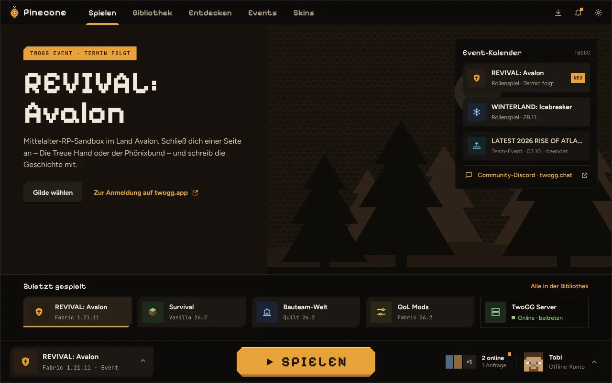
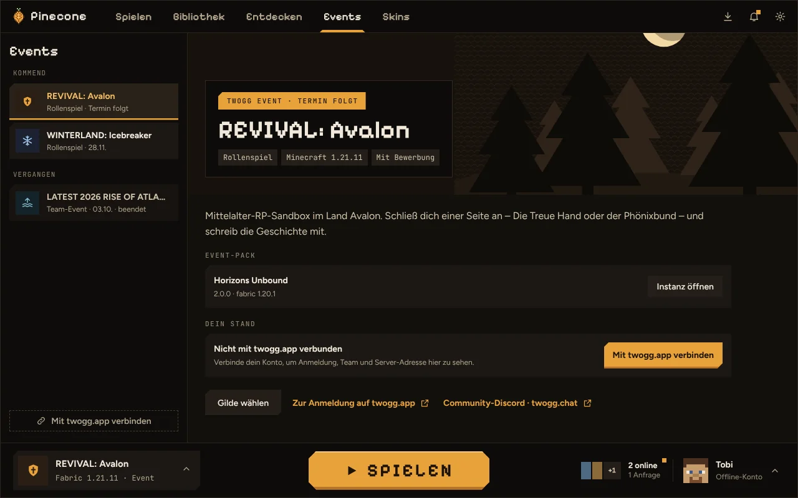
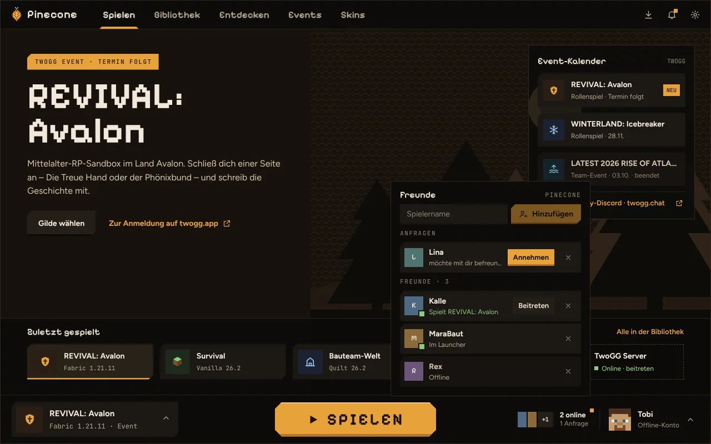
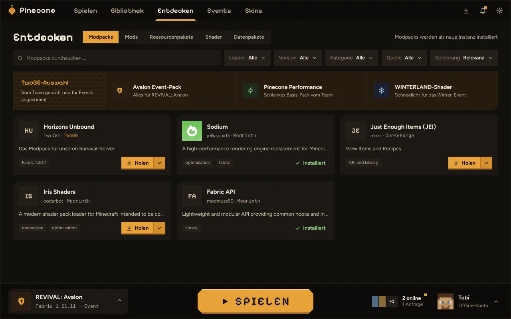

Instanzen
Jede Instanz hat ihren eigenen Spielordner mit Mods, Welten und Einstellungen. Vanilla, Fabric, Quilt, Forge oder NeoForge, jede Minecraft-Version.
Pinecone ist der Minecraft-Launcher der TwoGG-Community. Instanzen, Mods und Modpacks an einem Ort, dazu TwoGG-Events, Event-Packs und deine Freunde, direkt im Launcher.

Pinecone kümmert sich um Versionen, Java und Downloads. Du entscheidest nur, was du spielen willst.
Jede Instanz hat ihren eigenen Spielordner mit Mods, Welten und Einstellungen. Vanilla, Fabric, Quilt, Forge oder NeoForge, jede Minecraft-Version.
Modpacks, Mods, Ressourcenpakete, Shader und Datenpakete durchsuchen und mit einem Klick installieren, samt Abhängigkeiten.
Importieren aus Datei oder Link, Updates mit Sicherung vorher. Deine eigenen Änderungen an Configs und Mods bleiben erhalten.
Zieh eine Instanz auf eine andere Minecraft-Version oder einen anderen Loader um. Pinecone sucht die passenden Mods dafür.
Eigene Sammlungen wie „Basics“ oder „Shader-Setup“ einmal anlegen und in jeder Instanz per Schalter an- und ausmachen.
Skin-Bibliothek mit 3D-Vorschau und Editor. Skin und Cape deines Kontos direkt aus dem Launcher setzen.
Welten sichern und aufräumen, Server mit Live-Status sehen und direkt beitreten. Screenshots und Logs je Instanz.
Drei Themes (Rinde, Kiefer, Winterland), fünf Akzentfarben, Pixel-Überschriften und reduzierte Animationen auf Wunsch.
Anmeldung mit deinem Microsoft-Konto, Tokens im Schlüsselbund des Systems. Signierte Updates, Quellcode offen auf GitHub.
Pinecone ist kein Launcher, der zufällig auch TwoGG kann. Events, Server und kuratierte Inhalte der Community sind fester Bestandteil.
Die Events von twogg.app siehst du im Launcher: Termine, Beschreibung, deine Anmeldung.

Die Pinecone-Freundesliste nutzt dein Minecraft-Konto, du brauchst kein weiteres Konto.

In „Entdecken“ stehen oben die Empfehlungen des TwoGG-Teams: Event-Packs, Performance-Packs und Shader, die zu unseren Servern passen. TwoGG-Modpacks gibt es nur über Pinecone.

Pinecone ist in der Beta. Updates kommen automatisch, sobald eine neue Version erscheint.
x86_64. Braucht WebKitGTK 4.1 (bei aktuellen Distributionen dabei).
Alle Versionen und Änderungen: GitHub Releases
Der Installer ist noch nicht mit einem Zertifikat signiert. Zeigt Windows „Der Computer wurde durch Windows geschützt“, klick auf „Weitere Informationen“ und dann „Trotzdem ausführen“.
Nach dem Download ausführbar machen: chmod +x Pinecone*.AppImage, dann per Doppelklick oder im Terminal starten.
In Pinecone unter Einstellungen → Allgemein → „Hilfe & Diagnose“ ein Diagnose-ZIP erstellen und mit einer kurzen Beschreibung melden.
Nein. Pinecone ist kostenlos und Open Source (MIT oder Apache-2.0). Du brauchst nur eine eigene Minecraft: Java Edition.
Nein. Zum Spielen reicht dein Microsoft-Konto. Die Verbindung mit twogg.app ist optional und zeigt dir deine Event-Anmeldungen im Launcher. Die Freundesliste läuft über dein Minecraft-Konto.
Ja. Modrinth-Packs (.mrpack) und CurseForge-Packs (ZIP) lassen sich importieren, ebenso Links von Modrinth. Eigene Instanzen kannst du als .mrpack exportieren und teilen.
Ja. Pinecone installiert Forge und NeoForge über deren offizielle Installer, inklusive Modpacks von Modrinth und CurseForge. Fabric und Quilt gibt es natürlich auch.
Pinecone prüft beim Start auf neue Versionen und installiert sie auf Wunsch. Updates sind signiert, der Launcher installiert nur Pakete von TwoGG.
Unter Windows in %APPDATA%\TwoGG\Pinecone, unter Linux in ~/.local/share/twogg-pinecone. Anmeldedaten speichert Pinecone im Schlüsselbund des Systems, nicht in Dateien.